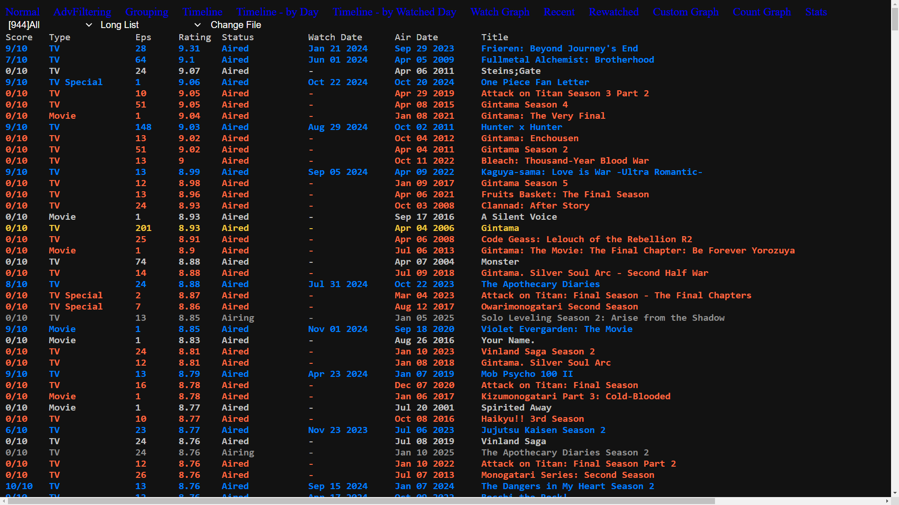
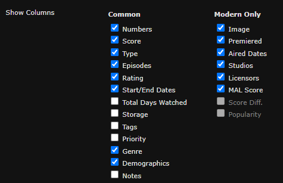

Image
Image

Image

Image

Image

Image

Image

Image

Image

Image

This project takes the data shown when viewing your profile on MyAnimeList, and parses it into a list of entries. The data is then used to create multiple different visualizations. It takes the form of a site that has you input a text file of an entire MyAnimeList profile page, found at "myanimelist.net/animelist/<username>"
As of right now, the text parser is configured to only read
properly when your anime list is set to a specific setting. To make it match, you need to match these settings
exactly:

This can be found by navigating to
your profile at "myanimelist.net/profile/<username>", then "Profile Settings" in the top
right, then to the "List" tab and scroll down. Setting your manga list to the same settings and
loading it will work, but probably has some small issues. Make sure to hit "Submit" at the top or
bottom of the settings page before closing it.
Next, open your anime list by going to
"myanimelist.net/animelist/<username>". Make sure to load the entire page by scrolling to the
bottom, or holding the "End" key until everything is loaded (the page only loads 300 entries
to start). Use Ctrl+A to select all text on the page, Ctrl+C or right-click -> copy to copy all text
to the clipboard, and then paste it all into a text file. You can input this file into the site by
clickint "Change File" then "Choose file" then selecting your text file. Then press
"Continue". If any of the buttons don't appear, reloading will likely solve it. Any time
you submit a new file, the site will try to compare the old data with the new data, and report any
differences.
Since the project is made for my own use primarily, several things are assumed.